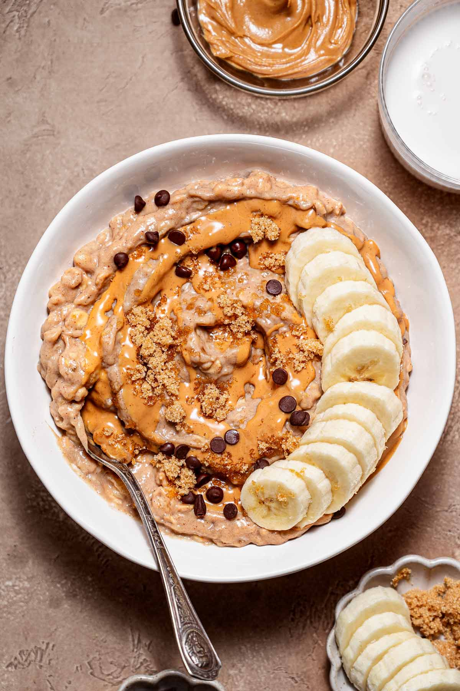

Protein Oats

Description
Ingredients
- 40-50g oats
- 1 tbsp. Peanut butter
- 1x Banana
- 1x tbsp. Skyr/Greek yogurt
- Whole fat milk
Steps
- Add 40-50g oats to a bowl
- Pour the milk up to an inch below the bowl line
- Cook in the microwave at max heat for 3 minutes
- Remove from microwave, stir, and cook it again for 1 minute
- Add 1 tbsp. of peanut butter and stir well
- Add 1 tbsp. of yogurt and stir well
- Add thin slices of your banana on top and you're done!
Home